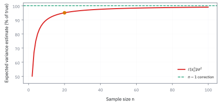

3.3 Estimators, Bias, and Standard Error
ตัวเลขที่คำนวณได้แม่นกี่หลัก ไม่สำคัญเท่ารู้ว่ามันคลาดได้แค่ไหน
ข้อมูลหุ้นหนึ่งปีให้ผลตอบแทนเฉลี่ยที่แปลงเป็นรายปี 8% และ volatility รายปี 20% โปรแกรมจัดพอร์ตกำลังจะใช้ทั้งสองค่าเหมือนรู้แน่นอน แต่ถ้าเก็บข้อมูลใหม่ ค่าประมาณใดจะแกว่งมากกว่า? และการยอมดึงค่าเฉลี่ยเข้าหาศูนย์อาจให้คำตอบที่ดีกว่าได้อย่างไร?
1. แยกสูตรออกจากค่าที่สูตรให้
Estimator คือตัวประมาณหรือกฎคำนวณจากข้อมูล เช่น $\bar X=n^{-1}\sum_iX_i$ ก่อนเห็นข้อมูลมันเป็นตัวแปรสุ่ม ส่วน estimate คือค่าที่ได้หลังใส่ข้อมูลจริง เช่น 8% คุณสมบัติว่าเบ้หรือแม่นเป็นของกฎเมื่อใช้ซ้ำกับข้อมูลใหม่ ไม่อาจตัดสินจากตัวเลขเพียงชุดเดียว
ให้ $\theta$ เป็นพารามิเตอร์จริงที่คงที่ในแบบจำลอง และ $\hat\theta$ เป็นตัวประมาณ คำว่า bias วัดว่าศูนย์กลางของคำตอบเลื่อนจากเป้าเท่าไร ส่วน standard error (SE) วัดการกระจายของคำตอบรอบศูนย์กลางของมัน
SE ไม่ใช่ SD ของข้อมูลรายตัว และ bias ไม่ได้คงอยู่เสมอเมื่อข้อมูลเพิ่ม: bias บางชนิดหายไปตาม $n$ เช่นการหาร sample variance ด้วย $n$ แต่ bias จากการลืมต้นทุนหรือเลือกช่วงดีอาจไม่หายไปเลย
2. ทำไม sample variance จึงหารด้วย $n-1$
เริ่มจากผลตอบแทนสมมติสามงวด 1%, 3%, 8% ค่าเฉลี่ยคือ 4% ความคลาดจากค่าเฉลี่ยเป็น −3, −1, +4 จุดเปอร์เซ็นต์ ผลรวมกำลังสองเท่ากับ $9+1+16=26$ จุดเปอร์เซ็นต์²
ถ้าคำนวณด้วยทศนิยม variance แบบหลังคือ 0.0013 และ SD คือ $\sqrt{0.0013}=0.03606$ หรือ 3.606% ไม่ใช่ 13% ตัวหารต่างกันไม่ทำให้เรารู้ variance จริงจากสามจุดได้ แต่เปลี่ยนคุณสมบัติเฉลี่ยของวิธีประมาณ
เห็นเหตุผลได้ชัดที่ $n=2$: ค่าเฉลี่ยอยู่กลางสองตัว ระยะคลาดจึงเป็น $\pm(X_1-X_2)/2$ ถ้าสองตัวเป็นอิสระ มีค่าเฉลี่ยและ variance เดียวกัน
ผลรวมกำลังสองจึงมีความคาดหวังเพียง $\sigma^2$ หากหารสองอีกครั้งจะเหลือครึ่งหนึ่งของค่าจริง ต้องหารหนึ่งเพื่อให้ unbiased
3. พิสูจน์ Bessel's correction สำหรับทุกขนาด
ภายใต้ข้อมูล i.i.d. ที่มี variance จำกัด เติมและลบ $\mu$ แล้วใช้ $\sum_i(X_i-\mu)=n(\bar X-\mu)$ จะได้เอกลักษณ์
หาความคาดหวังทั้งสองข้าง โดยใช้ว่า $\bar X$ ไม่เบ้และมี variance $\sigma^2/n$
ส่วน residuals มีข้อจำกัดว่ารวมกันเป็นศูนย์ จึงเหลือ degrees of freedom หรือจำนวนทิศทางอิสระ $n-1$ ไม่ได้หมายความว่า residual แต่ละตัวเป็นตัวแปรอิสระกัน การแก้ตัวหารนี้ไม่ต้องสมมติ normal แต่ถ้าข้อมูลมี covariance สูตรความคาดหวังข้างต้นอาจไม่จริง
หากใช้ตัวหาร $n$ จะได้ความคาดหวัง $(n-1)\sigma^2/n$ ที่ $n=20$ ต่ำกว่าจริง 5% โดยเฉลี่ยข้ามการสุ่มซ้ำ ไม่ใช่ต่ำกว่าแน่นอน 5% ในทุกชุดข้อมูล และแม้ $s^2$ ไม่เบ้ ราก $s$ ยังเบ้ได้เพราะการถอดรากเป็นฟังก์ชันไม่เชิงเส้น
ภาพ 3.3d — ผลของตัวหารต่อศูนย์กลางของตัวประมาณ

เส้นโค้งคือ $100(n-1)/n$ จุดที่ $n=20$ อยู่ที่ 95% เส้นประคือการหาร $n-1$ ซึ่งมีความคาดหวังตรงค่าจริง เงื่อนไขนี้ไม่ได้รับรองว่า estimate ชุดใดชุดหนึ่งใกล้ค่าจริง
4. ความคลาดรวม = ความแปรปรวน + bias กำลังสอง
ถ้าตัดสินด้วยความผิดพลาดกำลังสอง จะใช้ mean squared error (MSE) แทนการดู bias อย่างเดียว ให้ $b=\mathbb E[\hat\theta]-\theta$ แล้วแยกความคลาดเป็นส่วนสุ่มและส่วนคงที่
เมื่อยกกำลังสองแล้วหาความคาดหวัง พจน์ไขว้หายเพราะ $\mathbb E[\hat\theta-\mathbb E\hat\theta]=0$ จึงได้
MSE มีหน่วยเป็นกำลังสอง ส่วน root MSE หรือ RMSE กลับมาเป็นหน่วยเดียวกับพารามิเตอร์ วิธีที่มี bias เล็กน้อยแต่ variance ต่ำอาจมี MSE ดีกว่าวิธีไม่เบ้ที่แกว่งมาก นี่เป็นการเลือกภายใต้เกณฑ์ความเสียหายหนึ่ง ไม่ใช่วิธีที่ดีที่สุดสำหรับทุกวัตถุประสงค์
ภาพ 3.3a — ศูนย์กลางกับการกระจายเป็นคนละเรื่อง

ภาพประกอบมีทั้งกลุ่มกระจายและกลุ่มกระจุก ใกล้เส้นศูนย์และเลื่อนไปทางขวา จุดเป็นชุดสาธิตที่กำหนดไว้ ไม่ใช่การทดลองประมาณค่าจริง กลุ่มแคบที่เลื่อนจากเป้าช่วยแยกความแม่นยำในการทำซ้ำออกจากความถูกต้องของศูนย์กลาง
5. เก็บถี่ขึ้นกับเก็บนานขึ้นช่วยคนละอย่าง
ในแบบจำลอง log return อิสระที่ drift และ volatility คงที่ ให้ช่วงสังเกตรวมเป็น $T$ ปี แบ่งเป็น $n$ งวด งวดละ $\Delta t=T/n$ โดย $\mathbb E[r_i]=\mu\Delta t$ และ $\operatorname{Var}(r_i)=\sigma^2\Delta t$ ที่นี่ $\mu$ เป็น log-return drift ต่อปี ไม่ใช่ผลตอบแทน simple ที่ทบต้นแน่นอน
ผลรวม log returns หักพจน์กลางกันหมด เรียกว่า telescoping sum ภายใต้แบบจำลองนี้การซอยปีเดิมเป็นรายวันหรือรายนาทีไม่เพิ่มความแม่นของ drift เพราะไม่ได้เพิ่มเวลาที่สังเกต แต่ช่วยประมาณความผันผวนจากการแกว่งระหว่างทางได้มากขึ้น
ตัวอย่างสมมติ $T=1$, $n=252$, $\hat\mu=0.08$ และใช้ $\sigma\approx0.20$ เป็นสเกลวางแผน จะได้ SE ของ drift ราว 0.20 หรือ 20 จุดเปอร์เซ็นต์ ช่วง normal แบบประมาณคือ $8\%\pm1.96(20\%)=[-31.2\%,47.2\%]$ นี่เป็นช่วงของพารามิเตอร์ค่าเฉลี่ย ไม่ใช่ช่วงทำนายผลตอบแทนปีหน้า
6. Delta method: แปลงความไม่แน่นอนของ variance เป็น volatility
สมมติข้อมูล normal อิสระ ถ้าจัดมาตรฐานเป็น $Z$ จะได้ $\mathbb E[Z^2]=1$ และ $\mathbb E[Z^4]=3$ จึงมี $\operatorname{Var}(Z^2)=2$ สำหรับ sample variance จาก normal มีสูตร exact $\operatorname{Var}(s^2)=2\sigma^4/(n-1)$ ซึ่งประมาณด้วย $2\sigma^4/n$ เมื่อ $n$ ใหญ่
ฟังก์ชัน $g(v)=\sqrt v$ มีความชัน $g'(\sigma^2)=1/(2\sigma)$ การขยับเล็ก ๆ ของ variance จึงส่งผ่านความชันนี้ไปยัง SD วิธีประมาณเชิงเส้นนี้เรียกว่า delta method
ที่ volatility รายปี 20% และ 252 งวด ได้ SE $0.20/\sqrt{504}=0.008909$ หรือ 0.891 จุดเปอร์เซ็นต์ ถ้าเก็บ 98,280 งวดอิสระในปีเดียวตามแบบจำลองอุดมคติ จะเหลือ 0.0451 จุดเปอร์เซ็นต์ แต่ mean SE ยัง 20 จุดเท่าเดิม
สูตรนี้อาศัย normal และความเป็นอิสระอย่างมาก หางหนา volatility clustering และ microstructure noise ทำให้การเพิ่มความถี่ไม่ได้ช่วยตามสูตรเสมอ การรู้ volatility ดีกว่า drift ก็ไม่ใช่เหตุผลให้ส่ง volatility เข้า optimizer โดยไม่ตรวจ regime และความเสี่ยงประมาณค่า
ภาพ 3.3b — ระวังสเกลผิดในภาพเดิม

ภาพเดิมตั้งใจเทียบ SE ของ mean กับ volatility แต่ข้อมูลที่ใช้สร้างแท่ง volatility คูณ 100 ซ้ำ: ค่าแท่งรายวันเป็น 89.09 และรายนาที 4.511 ทั้งที่แกนระบุจุดเปอร์เซ็นต์และจำกัดถึง 22 ทำให้แท่งรายวันถูกตัดยอด ค่าที่ถูกต้องคือ 20, 0.891, 0.0451 จุดเปอร์เซ็นต์ ตามลำดับ ใช้สูตรและค่าข้างต้น ไม่ใช้ความสูงแท่งนี้เปรียบเทียบความแม่น
7. Shrinkage: ยอมเอนเพื่อให้นิ่งขึ้น
สมมติ $\hat\mu$ ไม่เบ้ มี variance $V$ และใช้ weight คงที่ $0\le w\le1$ ดึงค่าประมาณเข้าหาศูนย์เป็น $\tilde\mu=w\hat\mu$ จะได้ bias $(w-1)\mu$ และ variance $w^2V$
อนุพันธ์อันดับสองเป็น $2(V+\mu^2)\gt0$ เมื่อมีสัญญาณหรือ noise อย่างใดอย่างหนึ่ง จึงเป็นจุดต่ำสุด แต่สูตรนี้ใช้ ค่าเฉลี่ยจริงที่ไม่รู้ จึงเป็น oracle weight: ตัวช่วยอธิบายขีดจำกัดในโลกที่รู้พารามิเตอร์ ไม่ใช่สูตรพร้อมใช้โดยแทนค่าประมาณตัวเดิมแล้วอ้าง MSE เดิม
8. คำนวณประโยชน์ในโลกสมมติที่รู้ค่าจริง
แยกจากข้อมูลเปิดเรื่องชั่วคราว: สมมติว่ารู้จริงว่า $\mu=8$ จุดเปอร์เซ็นต์ และ $V=20^2=400$ จุดเปอร์เซ็นต์² จะได้ $w^*=64/464=0.137931$
เทียบกับ RMSE 20 จุดเมื่อใช้ $w=1$ การลด variance คุ้มกับ bias ที่เพิ่ม ถ้าข้อมูลชุดหนึ่งให้ estimate 8% น้ำหนักนี้จะให้ $0.137931(8\%)=1.10345\%$ แต่เราไม่ได้พิสูจน์ว่าหุ้นจริงในโจทย์มีค่าเฉลี่ย 8% หรือว่าน้ำหนักนี้เหมาะกับมัน ในงานจริงต้องเลือก target และ weight จากข้อมูลภายนอก แบบจำลองร่วม หรือการตรวจนอกตัวอย่าง และรวมความไม่แน่นอนของการเลือกนั้นด้วย
ภาพ 3.3c — จุดต่ำสุดเมื่อกำหนดพารามิเตอร์จริงไว้แล้ว

กราฟใช้ $\mu=8$ และ $V=400$ ในหน่วยจุดเปอร์เซ็นต์ จึงต่ำสุดที่ $w=0.137931$ ค่า $w=0$ มี MSE 64; ค่า $w=1$ มี MSE 400 รูปนี้ยืนยันการแลก bias กับ variance ในแบบจำลองที่ระบุ ไม่ใช่การประเมินผลจากข้อมูลหุ้นจริง
คำนวณเองด้วย JavaScript
ข้อมูลสามงวดใช้หน่วยจุดเปอร์เซ็นต์ ส่วน volatility ในโค้ดใช้ทศนิยมก่อนแปลงกลับ โค้ดแยกสองหน่วยนี้อย่างชัดเจน
const x = [1, 3, 8];
const mean = x.reduce((a, b) => a + b, 0) / x.length;
const ss = x.reduce((sum, v) => sum + (v - mean) ** 2, 0);
const trueMu = 8, V = 400;
const w = trueMu ** 2 / (trueMu ** 2 + V);
const mse = w ** 2 * V + (1 - w) ** 2 * trueMu ** 2;
const result = {
mean, ss, varianceN: ss / x.length, varianceN1: ss / (x.length - 1),
sampleSD: Math.sqrt(ss / (x.length - 1)),
meanSEPoints: 100 * 0.20 / Math.sqrt(1),
volSEPoints: 100 * 0.20 / Math.sqrt(2 * 252),
minuteSEPoints: 100 * 0.20 / Math.sqrt(2 * 98280),
lower: 8 - 1.96 * 20, upper: 8 + 1.96 * 20,
w, mse, rmse: Math.sqrt(mse), shrunk: w * 8,
mseZero: trueMu ** 2, mseRaw: V
};
console.log(JSON.stringify(result));แบบฝึกหัดพร้อมคำตอบ
1. ตัวประมาณ A ไม่เบ้ มี SE 4; ตัวประมาณ B มี bias 2 และ SE 2 วิธีใดมี MSE ต่ำกว่า?
เฉลย
A มี MSE $4^2=16$ ส่วน B มี $2^2+2^2=8$ จึงเลือก B ถ้าความเสียหายกำลังสองตรงกับวัตถุประสงค์ของเรา ความไม่เบ้ไม่ใช่เกณฑ์เดียว
2. มีข้อมูล i.i.d. 20 ค่า ใช้ตัวหาร $n$ จะ underestimate variance จริง 5% ในทุกชุดหรือไม่?
เฉลย
ไม่ใช่ เป็นข้อความเกี่ยวกับความคาดหวังข้ามข้อมูลหลายชุด: $\mathbb E[s_n^2]=0.95\sigma^2$ ชุดเดียวอาจได้ค่ามากกว่าหรือน้อยกว่าจริงก็ได้ และ bias แบบนี้ลดลงเมื่อ $n$ โต
3. ถ้ารู้ว่าค่าเฉลี่ยจริงเป็นศูนย์และ $V\gt0$ oracle shrinkage weight เท่าไร? แล้วเหตุใดจึงไม่ใช้ศูนย์กับทุกสินทรัพย์?
เฉลย
ได้ $w^*=0$ และ MSE ศูนย์ เพราะรู้คำตอบแล้ว แต่ในงานจริงไม่รู้ว่า $\mu=0$ การตั้ง target ผิดอาจเพิ่ม bias มาก ต้องมีเหตุผลและตรวจนอกตัวอย่าง
ก่อนส่งค่าประมาณเข้า optimizer
รายงานหน่วยและ SE คู่กับ mean, ตรวจข้อมูลค้างและ outliers ก่อนประมาณ volatility, ตรวจ covariance matrix ว่าให้ variance ของทุกพอร์ตไม่ติดลบ และจำกัด leverage การกระจุกตัวกับ turnover ต่อให้ค่าประมาณไม่เบ้ก็ยังเกิดพอร์ตสุดโต่งจาก noise ได้ แนวคิดการแยก estimator ออกจาก estimate และการเปรียบเทียบ MSE จึงสำคัญกว่าจำนวนทศนิยมของคำตอบ
สิ่งที่ควรจำ
- SE บอกการกระจายของตัวประมาณ; MSE รวม variance และ bias กำลังสอง
- $n-1$ ทำให้ sample variance ไม่เบ้ภายใต้ข้อมูล i.i.d. ไม่ได้ทำให้ sample SD ไม่เบ้หรือแก้ dependence
- ในแบบจำลอง drift คงที่ ความยาวเวลาช่วยค่าเฉลี่ย ส่วนความถี่ช่วย volatility ภายใต้เงื่อนไขที่เข้มกว่า
- Shrinkage อาจลด MSE แต่ผล 7.43 จุดในตัวอย่างอาศัย oracle weight ไม่ใช่ผลรับประกันเมื่อใช้ estimated weight